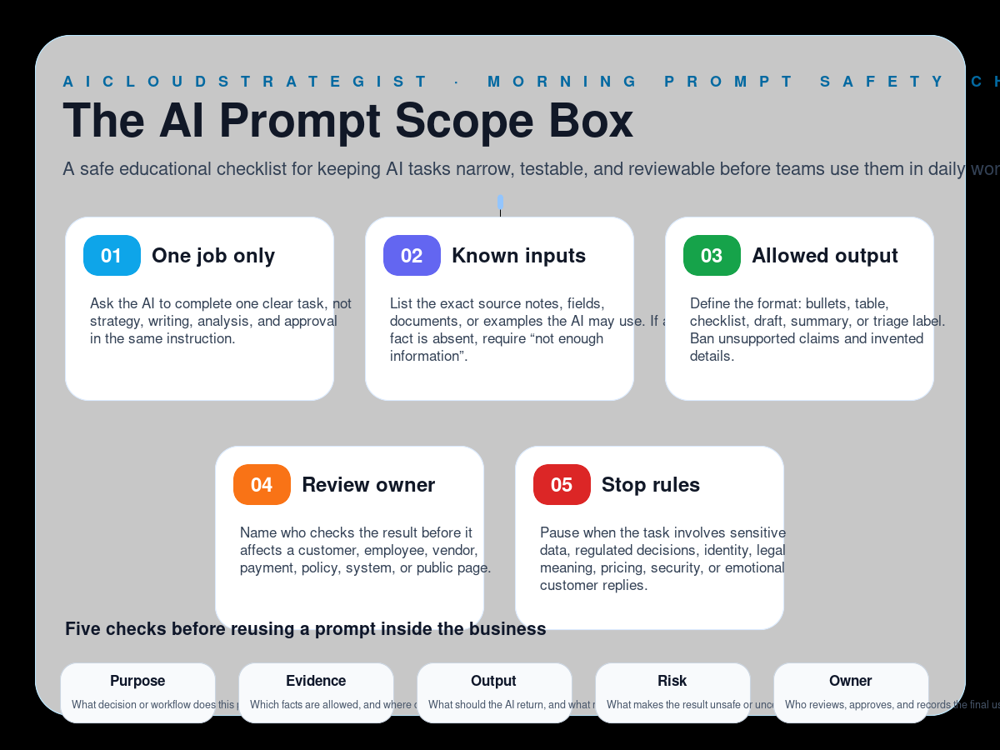

Morning publication · AI prompt safety
The AI Prompt Scope Box
A safe educational checklist for keeping AI tasks narrow, testable, and reviewable before teams use them in daily work.

Five prompt scope boxes
- One job only: Ask the AI to complete one clear task, not strategy, writing, analysis, and approval in the same instruction.
- Known inputs: List the exact source notes, fields, documents, or examples the AI may use. If a fact is absent, require “not enough information”.
- Allowed output: Define the format: bullets, table, checklist, draft, summary, or triage label. Ban unsupported claims and invented details.
- Review owner: Name who checks the result before it affects a customer, employee, vendor, payment, policy, system, or public page.
- Stop rules: Pause when the task involves sensitive data, regulated decisions, identity, legal meaning, pricing, security, or emotional customer replies.
Five checks before reuse
- Purpose: What decision or workflow does this prompt support?
- Evidence: Which facts are allowed, and where did they come from?
- Output: What should the AI return, and what must it never claim?
- Risk: What makes the result unsafe or uncertain?
- Owner: Who reviews, approves, and records the final use?
How to use this box
Use this prompt scope box when a team wants to reuse an AI instruction for inbox sorting, report drafting, ticket triage, internal summaries, or operational checklists. Keep the task small, define the allowed evidence, and require review before the result affects people or public communication.
Truth boundary
Educational workflow only — not legal, compliance, medical, financial, security, certification, savings, ranking, revenue, booking, or guaranteed-performance advice.